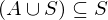
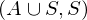
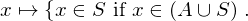
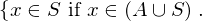
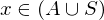
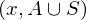
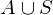
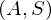

Expression of type ExprTuple¶
from the theory of proveit.logic.sets¶
In [1]:
import proveit
# Automation is not needed when building an expression:
proveit.defaults.automation = False # This will speed things up.
proveit.defaults.inline_pngs = False # Makes files smaller.
%load_expr # Load the stored expression as 'stored_expr'
# import Expression classes needed to build the expression
from proveit import A, ExprTuple, S, x
from proveit.logic import Forall, InSet, SubsetEq, Union
In [2]:
# build up the expression from sub-expressions
sub_expr1 = Union(A, S)
expr = ExprTuple(SubsetEq(sub_expr1, S), Forall([x], InSet(x, S), domains = [sub_expr1]))
Out[2]:
In [3]:
# check that the built expression is the same as the stored expression
assert expr == stored_expr
assert expr._style_id == stored_expr._style_id
print("Passed sanity check: expr matches stored_expr")
In [4]:
# Show the LaTeX representation of the expression for convenience if you need it.
print(expr.latex())
In [5]:
# display the expression information
expr.expr_info()
Out[5]:
| core type | sub-expressions | expression | |
|---|---|---|---|
| 0 | ExprTuple | 1, 2 | |
| 1 | Operation | operator: 3 operands: 4 |  |
| 2 | Operation | operator: 5 operand: 6 |  |
| 3 | Literal |  | |
| 4 | ExprTuple | 14, 18 |  |
| 5 | Literal |  | |
| 6 | Lambda | parameter: 13 body: 7 |  |
| 7 | Conditional | value: 8 condition: 9 |  |
| 8 | Operation | operator: 11 operands: 10 |  |
| 9 | Operation | operator: 11 operands: 12 |  |
| 10 | ExprTuple | 13, 18 |  |
| 11 | Literal |  | |
| 12 | ExprTuple | 13, 14 |  |
| 13 | Variable |  | |
| 14 | Operation | operator: 15 operands: 16 |  |
| 15 | Literal |  | |
| 16 | ExprTuple | 17, 18 |  |
| 17 | Variable |  | |
| 18 | Variable |  |